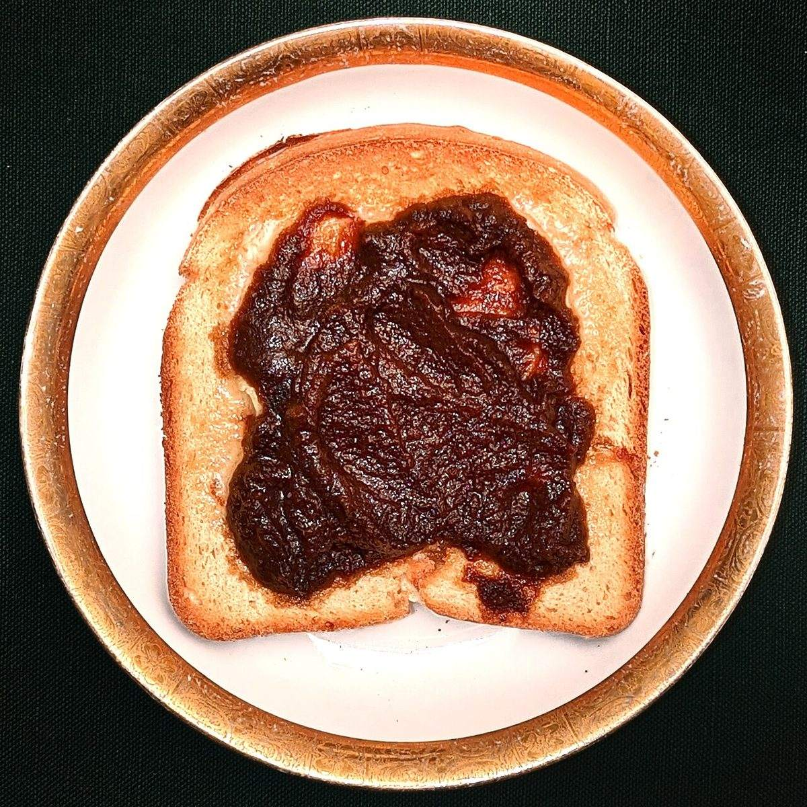

メニュー
メニューは準備中です
提供内容・価格は確認でき次第、お店の情報にあわせて掲載します。いまは何も断定せず、準備中としています。
掲載の枠
六つの引き出し
図の六つの部位に合わせて、枠だけ用意しました。中身はすべて準備中です。
- 1項目1準備中
- 2項目2準備中
- 3項目3準備中
- 4項目4準備中
- 5項目5準備中
- 6項目6準備中
写真(イメージ)
パンとコーヒーのイメージ



写真はイメージです。お店のメニューや提供内容を示すものではありません。
メニュー
提供内容・価格は確認でき次第、お店の情報にあわせて掲載します。いまは何も断定せず、準備中としています。
掲載の枠
図の六つの部位に合わせて、枠だけ用意しました。中身はすべて準備中です。
写真(イメージ)

写真はイメージです。お店のメニューや提供内容を示すものではありません。